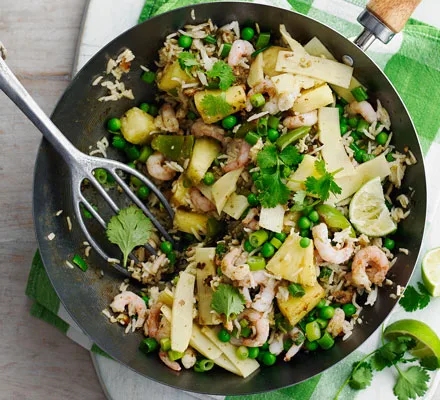

Thai fried prawn & pineapple rice

This quick, low calorie supper is perfect for a busy weeknight. Cook your rice in advance to get ahead - run it under cold water to chill quickly, then freeze in a food bag for up to one month
Ingredients
- 2 tsp sunflower oil
- bunch spring onions , greens and whites separated, both sliced
- 1 green pepper , deseeded and chopped into small chunks
- 140g pineapple , chopped into bite-sized chunks
- 3 tbsp Thai green curry paste
- 4 tsp light soy sauce , plus extra to serve
- 300g cooked basmati rice (brown, white or a mix - about 140g uncooked rice)
- 2 large eggs , beaten
- 140g frozen peas
- 225g can bamboo shoots , drained
- 250g frozen prawns , cooked or raw
- 2-3 limes , 1 juiced, the rest cut into wedges to serve
- handful coriander leaves (optional)
Preparation
- Heat the oil in a wok or non-stick frying pan and fry the spring onion whites for 2 mins until softened. Stir in the pepper for 1 min, followed by the pineapple for 1 min more, then stir in the green curry paste and soy sauce.
- Add the rice, stir-frying until piping hot, then push the rice to one side of the pan and scramble the eggs on the other side. Stir the peas, bamboo shoots and prawns into the rice and eggs, then heat through for 2 mins until the prawns are hot and the peas tender. Finally, stir in the spring onion greens, lime juice and coriander, if using. Spoon into bowls and serve with extra lime wedges and soy sauce.